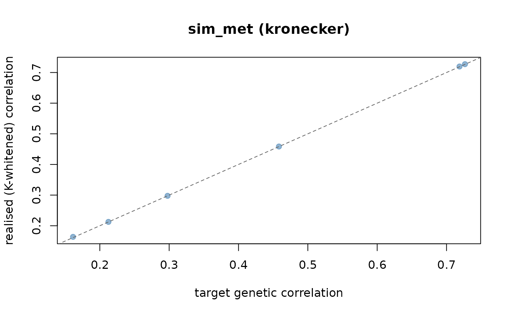

Simulate a Multi-Environment Trial with a Known Genetic Architecture
Source:R/env_prediction.R
sim_met.RdCore simulator. Generates genotype-by-environment phenotypes whose truth is
known exactly: a genomic kinship \(K\) among lines, a genetic (type-B)
correlation \(C\) among environments, and a per-environment heritability.
It is the reference-answer generator against which kernel_model
and scan_untested_envs can be checked, and it pairs with
sim_W to study how well an envirome recovers \(C\).
Usage
sim_met(
K = NULL,
n_env = NULL,
min.h2 = 0.2,
max.h2 = 0.8,
min.cor = 0,
max.cor = 0.8,
C = NULL,
h2 = NULL,
n_rep = 1,
sg2 = 1,
exact = TRUE,
env_effects = NULL,
subset = NULL,
subset.by = c("cell", "gid_env"),
K.weights = NULL,
W = NULL,
reaction.norm = !is.null(W),
rn.main = 0.5,
gxe.specific = 0,
markers = NULL,
n.qtl = NULL,
rep.var = 0,
spatial = FALSE,
field.dim = NULL,
spatial.rho = 0.6,
spatial.var = 1,
seed = NULL,
verbose = TRUE
)Arguments
- K
n x n genomic kinship AMONG LINES (e.g.
maizeG), or a named list of such matrices for multiple variance components (combined withK.weights). Made positive definite internally, so a singular marker-based kinship is fine. May beNULLwhenmarkersis given.- n_env
integer. Number of environments; inferred from
Cif given.- min.h2, max.h2
numeric. Plot-basis heritability range, used when
h2is not supplied. Must satisfy \(0 < min.h2 \le max.h2 < 1\).- min.cor, max.cor
numeric. Genetic correlation range among environments, used when
Cis not supplied. Mutually exclusive withC.- C
q x q correlation AMONG ENVIRONMENTS (see
sim_met_C). Mutually exclusive withmin.cor/max.cor.- h2
numeric vector of per-environment heritabilities (length 1 or
n_env). Mutually exclusive withmin.h2/max.h2.- n_rep
integer. Replicates per genotype x environment cell.
- sg2
numeric. Genetic variance per environment (length 1 or
n_env).- exact
logical. Orthonormalise the draw so realised moments match the targets. Default
TRUE.- env_effects
numeric. Optional fixed environment means \(\mu_j\).
- subset
numeric in (0, 1]. Fraction of cells retained, to induce unbalancedness.
- subset.by
"cell" or "gid_env". Whether missingness is drawn per observation or per genotype-by-environment cell.
- K.weights
numeric. Non-negative weights (rescaled to sum 1) for a list of kinships in
K; ignored for a single matrix. Default equal weights.- W
q x k envirome matrix. When supplied, genetic values are generated as reaction norms and the environment correlation is induced from
W.- reaction.norm
logical. Use the reaction-norm mechanism. Defaults to
TRUEwhenWis supplied.- rn.main
numeric in [0, 1]. Share of genetic variance assigned to the main (across-environment) effect under the reaction-norm mechanism; the rest is reaction-norm interaction. Default 0.5.
- gxe.specific
numeric in [0, 1). Share of genetic variance made line-independent and environment-specific, breaking separability. Default 0.
- markers
n x m marker matrix. When supplied, a marker/QTL mechanism replaces the infinitesimal draw and
Kis derived from the markers if not given.- n.qtl
integer. Number of markers acting as QTL (sampled) when
markersis used;NULLuses all markers.- rep.var
numeric. Variance of a random replicate/block effect added to phenotypes. Default 0.
- spatial
logical. Add an AR1\(\times\)AR1 spatial field to each environment. Default
FALSE.- field.dim
integer length-2
c(nrow, ncol). Field layout per environment; defaults to a near-square grid sized to the plots.- spatial.rho
numeric. Lag-1 spatial autocorrelation. Default 0.6.
- spatial.var
numeric. Variance of the spatial field. Default 1.
- seed
integer. RNG seed. The caller's RNG stream is restored on exit.
- verbose
logical. Print a summary. Default
TRUE.
Value
An object of class "sim_met": a list with
datalong
data.framewithenv,gid,rep,value.C_envthe target environment correlation, with the realised correlation attached as attribute
"realised".truthlist of everything known: genetic values
g, target/realised correlations, target/realised heritabilities on both bases, variances, means.Kthe positive-definite kinship actually used.
Details
Model. For \(n\) lines and \(q\) environments, genetic values are
drawn from a separable (Kronecker) Gaussian
$$\mathrm{vec}(G) \sim \mathcal{N}\!\left(0,\; K \otimes \Sigma_g\right),
\qquad \Sigma_g = D^{1/2}\, C\, D^{1/2},\; D = \mathrm{diag}(\sigma^2_g),$$
realised as \(G = L_K\, U\, L_C^{\top}\) with \(L_K L_K^{\top}=K\),
\(L_C L_C^{\top}=\Sigma_g\). When exact = TRUE the driver \(U\) is
orthonormalised so that \(U^{\top}U = nI\), making the realised moments
match their targets instead of merely scattering around them.
Phenotypes. For replicate \(r\), $$y_{ijr} = \mu_j + g_{ij} + \varepsilon_{ijr}, \qquad \varepsilon_{ijr}\sim\mathcal{N}(0,\sigma^2_{e,j}),\quad \sigma^2_{e,j} = \sigma^2_{g,j}\,\frac{1-h^2_j}{h^2_j}.$$
Heritability, two bases. The plot-basis value
\(h^2 = V_g/(V_g+V_e)\) is what min.h2/max.h2 target; the
line-mean basis \(h^2/(h^2 + (1-h^2)/n_{rep})\) is also reported.
Realised environment correlation is measured on the K-whitened scale.
Because lines are related through \(K\), cor(G) across lines is not
\(C\); forcing it to be is wrong. The realised correlation is defined as
\(\mathrm{cor}(L_K^{-1} G)\) and stored for validation.
The two matrices are different objects. K is \(n\times n\)
among lines; the environment correlation is \(q\times q\). A genomic kinship
passed where an environment correlation is expected is the most common error
and is rejected by an elementwise unit-diagonal check.
Alternative genetic mechanisms. Besides the default separable draw, three opt-in mechanisms generate the genetic values:
Reaction norm (supply
W): genetic values are built causally from an envirome, \(g_{ij} = m_i + \sum_k w_{jk} b_{ik}\) with a main effect \(m\) and line sensitivities \(b_{\cdot k}\) both \(K\)-structured. The environment correlation is then induced byW(and reported), not imposed.rn.mainsplits variance between the main effect and the reaction-norm interaction.Marker-based (supply
markers): QTL effects are sampled per environment with the target correlationC, giving large-effect architectures instead of the infinitesimal draw.Multiple kinships (supply a list for
KwithK.weights): independent additive, dominance or epistatic components are summed.
gxe.specific adds a line-independent, environment-specific deviation that
makes the covariance non-separable. rep.var and spatial
(an AR1\(\times\)AR1 field) add trial realism to the phenotypes.
References
Costa-Neto, G., et al. (2023). Envirome-wide associations enhance multi-environment prediction. G3 13(2), jkac313.
Examples
# \donttest{
data(maizeG)
## 1. Baseline: random C and random h2 within a range
met <- sim_met(maizeG, n_env = 10, min.cor = 0.2, max.cor = 0.8,
min.h2 = 0.3, max.h2 = 0.7, seed = 1)
#> Warning: Rejection sampling failed in 200 tries; C was repaired by eigenvalue clamping.
#> Requested off-diagonal range [0.200, 0.800]; realised [0.235, 0.712].
#> <sim_met>
#> mechanism .............. kronecker
#> lines x environments ... 150 x 10 (K is 150 x 150, C_env is 10 x 10)
#> observations ........... 1500 (n_rep = 1)
#> h2 target .............. 0.305 - 0.699
#> h2 realised (plot) ..... 0.338 - 0.589 max err 0.134
#> h2 realised (line-mean). 0.338 - 0.589
#> gcor target ............ 0.235 - 0.712
#> gcor realised (whitened) 0.234 - 0.714 max err 0.00501
#> exact .................. TRUE
head(met$data)
#> env gid rep value
#> 1 E1 G001 1 0.07832088
#> 2 E1 G002 1 -1.86981920
#> 3 E1 G003 1 -0.30046219
#> 4 E1 G004 1 -0.24730764
#> 5 E1 G005 1 1.69483009
#> 6 E1 G006 1 -0.12096435
env_cor(met, "realised")
#> E1 E2 E3 E4 E5 E6 E7
#> E1 1.0000000 0.5840974 0.6572148 0.3107441 0.3068992 0.2765301 0.5642779
#> E2 0.5840974 1.0000000 0.3541772 0.5999238 0.5707302 0.6713132 0.6333932
#> E3 0.6572148 0.3541772 1.0000000 0.2608467 0.3553860 0.2338209 0.6526962
#> E4 0.3107441 0.5999238 0.2608467 1.0000000 0.3998467 0.2989908 0.4735922
#> E5 0.3068992 0.5707302 0.3553860 0.3998467 1.0000000 0.6064850 0.6627049
#> E6 0.2765301 0.6713132 0.2338209 0.2989908 0.6064850 1.0000000 0.6996137
#> E7 0.5642779 0.6333932 0.6526962 0.4735922 0.6627049 0.6996137 1.0000000
#> E8 0.3706377 0.6761573 0.4516344 0.4648517 0.4819571 0.5737005 0.5112892
#> E9 0.5129352 0.4146917 0.3002566 0.2996984 0.5282520 0.7141863 0.5530359
#> E10 0.2796059 0.6345446 0.5961043 0.6411305 0.4455481 0.5753977 0.6963337
#> E8 E9 E10
#> E1 0.3706377 0.5129352 0.2796059
#> E2 0.6761573 0.4146917 0.6345446
#> E3 0.4516344 0.3002566 0.5961043
#> E4 0.4648517 0.2996984 0.6411305
#> E5 0.4819571 0.5282520 0.4455481
#> E6 0.5737005 0.7141863 0.5753977
#> E7 0.5112892 0.5530359 0.6963337
#> E8 1.0000000 0.2704832 0.4598730
#> E9 0.2704832 1.0000000 0.4406982
#> E10 0.4598730 0.4406982 1.0000000
## 2. Supply an explicit environment correlation (e.g. a year-like series)
C <- sim_met_C(q = 8, structure = "ar1", rho = 0.6)
met <- sim_met(maizeG, C = C, h2 = 0.5, seed = 1)
#> <sim_met>
#> mechanism .............. kronecker
#> lines x environments ... 150 x 8 (K is 150 x 150, C_env is 8 x 8)
#> observations ........... 1200 (n_rep = 1)
#> h2 target .............. 0.500 - 0.500
#> h2 realised (plot) ..... 0.334 - 0.576 max err 0.166
#> h2 realised (line-mean). 0.334 - 0.576
#> gcor target ............ 0.028 - 0.600
#> gcor realised (whitened) 0.031 - 0.602 max err 0.00617
#> exact .................. TRUE
## 3. Fixed per-environment heritabilities and environment means
met <- sim_met(maizeG, n_env = 4, h2 = c(0.3, 0.5, 0.6, 0.8),
env_effects = c(2, 4, 6, 8), seed = 1)
#> <sim_met>
#> mechanism .............. kronecker
#> lines x environments ... 150 x 4 (K is 150 x 150, C_env is 4 x 4)
#> observations ........... 600 (n_rep = 1)
#> h2 target .............. 0.300 - 0.800
#> h2 realised (plot) ..... 0.316 - 0.684 max err 0.116
#> h2 realised (line-mean). 0.316 - 0.684
#> gcor target ............ 0.161 - 0.727
#> gcor realised (whitened) 0.161 - 0.726 max err 0.00167
#> exact .................. TRUE
## 4. Replicates and an unbalanced design (retain 70% of g x e cells)
met <- sim_met(maizeG, n_env = 6, n_rep = 3,
subset = 0.7, subset.by = "gid_env", seed = 1)
#> <sim_met>
#> mechanism .............. kronecker
#> lines x environments ... 150 x 6 (K is 150 x 150, C_env is 6 x 6)
#> observations ........... 1953 (n_rep = 3, unbalanced)
#> h2 target .............. 0.312 - 0.696
#> h2 realised (plot) ..... 0.297 - 0.557 max err 0.263
#> h2 realised (line-mean). 0.559 - 0.791
#> gcor target ............ 0.011 - 0.794
#> gcor realised (whitened) 0.011 - 0.794 max err 0.00525
#> exact .................. TRUE
## 5. Several genetic variance components (additive + dominance + epistasis)
met <- sim_met(K = list(add = maizeG, dom = maizeG, epi = maizeG),
K.weights = c(0.6, 0.3, 0.1), n_env = 8, seed = 1)
#> <sim_met>
#> mechanism .............. kronecker
#> lines x environments ... 150 x 8 (K is 150 x 150, C_env is 8 x 8)
#> observations ........... 1200 (n_rep = 1)
#> h2 target .............. 0.235 - 0.654
#> h2 realised (plot) ..... 0.243 - 0.719 max err 0.066
#> h2 realised (line-mean). 0.243 - 0.719
#> gcor target ............ 0.067 - 0.768
#> gcor realised (whitened) 0.001 - 0.804 max err 0.13
#> exact .................. TRUE
## 6. Causal reaction-norm: C is INDUCED by the envirome, not imposed
Wenv <- scale(matrix(rnorm(10 * 6), 10, 6))
rn <- sim_met(maizeG, W = Wenv, rn.main = 0.4, seed = 1)
#> <sim_met>
#> mechanism .............. reaction-norm
#> lines x environments ... 150 x 10 (K is 150 x 150, C_env is 10 x 10)
#> observations ........... 1500 (n_rep = 1)
#> h2 target .............. 0.237 - 0.767
#> h2 realised (plot) ..... 0.237 - 0.767 max err 0.000
#> h2 realised (line-mean). 0.237 - 0.767
#> gcor target ............ -0.021 - 0.905
#> gcor realised (whitened) -0.051 - 0.896 max err 0.0931
#> exact .................. TRUE
env_cor(rn, "target")
#> E1 E2 E3 E4 E5 E6
#> E1 1.00000000 0.37236401 0.1741295 0.4811845 0.54581582 0.10591644
#> E2 0.37236401 1.00000000 0.7284125 0.3382733 0.52070000 0.09694033
#> E3 0.17412948 0.72841250 1.0000000 0.2384691 0.13907531 0.10341481
#> E4 0.48118448 0.33827330 0.2384691 1.0000000 0.28741262 0.90498306
#> E5 0.54581582 0.52070000 0.1390753 0.2874126 1.00000000 0.04549415
#> E6 0.10591644 0.09694033 0.1034148 0.9049831 0.04549415 1.00000000
#> E7 -0.02119905 0.53081135 0.2539145 0.6468183 0.42874917 0.64886297
#> E8 0.09478600 0.05221871 0.2727087 0.6164205 0.38527456 0.63643506
#> E9 0.45531366 0.42769016 0.5908951 0.3514882 0.60486646 0.15110470
#> E10 0.29642827 0.59802829 0.5700999 0.3999195 0.36995999 0.32841792
#> E7 E8 E9 E10
#> E1 -0.02119905 0.09478600 0.4553137 0.2964283
#> E2 0.53081135 0.05221871 0.4276902 0.5980283
#> E3 0.25391446 0.27270867 0.5908951 0.5700999
#> E4 0.64681832 0.61642047 0.3514882 0.3999195
#> E5 0.42874917 0.38527456 0.6048665 0.3699600
#> E6 0.64886297 0.63643506 0.1511047 0.3284179
#> E7 1.00000000 0.56599436 0.3736693 0.1816172
#> E8 0.56599436 1.00000000 0.6710402 0.1871572
#> E9 0.37366930 0.67104020 1.0000000 0.1841931
#> E10 0.18161717 0.18715717 0.1841931 1.0000000
#> attr(,"realised")
#> E1 E2 E3 E4 E5 E6 E7
#> E1 1.00000000 0.41537626 0.2377120 0.4812204 0.5853953 0.08184723 -0.05100674
#> E2 0.41537626 1.00000000 0.7590231 0.3407629 0.5409448 0.07748665 0.47584331
#> E3 0.23771198 0.75902308 1.0000000 0.2461491 0.2111550 0.08304380 0.22800903
#> E4 0.48122038 0.34076289 0.2461491 1.0000000 0.3495093 0.89624658 0.65482379
#> E5 0.58539533 0.54094475 0.2111550 0.3495093 1.0000000 0.08585040 0.39387356
#> E6 0.08184723 0.07748665 0.0830438 0.8962466 0.0858504 1.00000000 0.67748119
#> E7 -0.05100674 0.47584331 0.2280090 0.6548238 0.3938736 0.67748119 1.00000000
#> E8 0.07993050 0.04928493 0.2725673 0.6368018 0.3889459 0.66610385 0.57225594
#> E9 0.51128202 0.47984655 0.6397830 0.4128318 0.6248904 0.18392359 0.34859652
#> E10 0.32871274 0.61844197 0.6165831 0.3983267 0.4264267 0.30416230 0.16093504
#> E8 E9 E10
#> E1 0.07993050 0.5112820 0.3287127
#> E2 0.04928493 0.4798465 0.6184420
#> E3 0.27256727 0.6397830 0.6165831
#> E4 0.63680177 0.4128318 0.3983267
#> E5 0.38894587 0.6248904 0.4264267
#> E6 0.66610385 0.1839236 0.3041623
#> E7 0.57225594 0.3485965 0.1609350
#> E8 1.00000000 0.6496896 0.2215585
#> E9 0.64968963 1.0000000 0.2772830
#> E10 0.22155846 0.2772830 1.0000000
#> attr(,"class")
#> [1] "C_env" "matrix" "array"
## 7. Marker / QTL architecture instead of the infinitesimal draw
X <- matrix(rbinom(200 * 500, 2, 0.3), 200, 500)
qtl <- sim_met(markers = X, n_env = 6, n.qtl = 30, seed = 1)
#> <sim_met>
#> mechanism .............. marker
#> lines x environments ... 200 x 6 (K is 200 x 200, C_env is 6 x 6)
#> observations ........... 1200 (n_rep = 1)
#> h2 target .............. 0.312 - 0.696
#> h2 realised (plot) ..... 0.312 - 0.696 max err 0.000
#> h2 realised (line-mean). 0.312 - 0.696
#> gcor target ............ 0.011 - 0.794
#> gcor realised (whitened) 0.132 - 0.798 max err 0.248
#> exact .................. TRUE
## 8. Non-separable GxE: 25% of genetic variance is environment-specific
met <- sim_met(maizeG, n_env = 6, gxe.specific = 0.25, seed = 1)
#> <sim_met>
#> mechanism .............. kronecker
#> lines x environments ... 150 x 6 (K is 150 x 150, C_env is 6 x 6)
#> observations ........... 900 (n_rep = 1)
#> h2 target .............. 0.312 - 0.696
#> h2 realised (plot) ..... 0.296 - 0.555 max err 0.264
#> h2 realised (line-mean). 0.296 - 0.555
#> gcor target ............ 0.011 - 0.794
#> gcor realised (whitened) -0.138 - 0.165 max err 0.876
#> exact .................. TRUE
## 9. Field realism: replicate/block noise plus an AR1 x AR1 spatial trend
met <- sim_met(maizeG, n_env = 4, n_rep = 2, rep.var = 0.5,
spatial = TRUE, field.dim = c(20, 15),
spatial.rho = 0.7, spatial.var = 1.5, seed = 1)
#> <sim_met>
#> mechanism .............. kronecker
#> lines x environments ... 150 x 4 (K is 150 x 150, C_env is 4 x 4)
#> observations ........... 1200 (n_rep = 2)
#> h2 target .............. 0.237 - 0.767
#> h2 realised (plot) ..... 0.089 - 0.328 max err 0.495
#> h2 realised (line-mean). 0.164 - 0.494
#> gcor target ............ 0.161 - 0.727
#> gcor realised (whitened) 0.164 - 0.727 max err 0.0024
#> exact .................. TRUE
## 10. Pair with a simulated envirome and diagnose the recovery
W <- sim_W(met$C_env, noise = 0.3, n_var = 50, seed = 1)
#> <sim_W>
#> environments x covariables . 4 x 50
#> r(K_W, C_env) off-diagonal . 0.7746 (target 0.7000)
#> r2 % of env relatedness ... 60.0%
#> effective rank ............. 2.76 of 50 covariables
#> PC1 share .................. 45.9%
#> internal variance share a .. 0.0864
#> marginal / kernel .......... gaussian / linear
plot(met)

## 11. End-to-end: simulate kinship + MET + envirome, then fit a model
## Simulate a genomic kinship KG from markers (VanRaden)
X <- matrix(rbinom(150 * 1000, 2, 0.3), 150, 1000)
rownames(X) <- paste0("G", seq_len(150)) # gid names carry through
Z <- scale(X); Z[is.na(Z)] <- 0
Kg <- tcrossprod(Z) / ncol(Z) + diag(1e-6, 150) # positive-definite kinship
dimnames(Kg) <- list(rownames(X), rownames(X))
KG <- list(G = Kg)
## Simulate the MET truth on that kinship (one replicate)
met <- sim_met(Kg, n_env = 10, n_rep = 1,
min.cor = 0.3, max.cor = 0.8,
min.h2 = 0.3, max.h2 = 0.7, seed = 1)
#> <sim_met>
#> mechanism .............. kronecker
#> lines x environments ... 150 x 10 (K is 150 x 150, C_env is 10 x 10)
#> observations ........... 1500 (n_rep = 1)
#> h2 target .............. 0.303 - 0.664
#> h2 realised (plot) ..... 0.315 - 0.668 max err 0.018
#> h2 realised (line-mean). 0.315 - 0.668
#> gcor target ............ 0.320 - 0.747
#> gcor realised (whitened) 0.321 - 0.746 max err 0.00673
#> exact .................. TRUE
df <- as.data.frame(met$data) # base data.frame for get_kernel()
## Simulate a redundant, noisier envirome on the same environments
W2 <- sim_W(met$C_env, noise = 0.6, n_var = 200,
collinearity = 0.8, n_blocks = 5, seed = 1)
#> <sim_W>
#> environments x covariables . 10 x 200
#> r(K_W, C_env) off-diagonal . 0.4592 (target 0.4000)
#> r2 % of env relatedness ... 21.1%
#> effective rank ............. 7.99 of 200 covariables
#> PC1 share .................. 20.3%
#> internal variance share a .. 0.0787
#> marginal / kernel .......... gaussian / linear
KE2 <- list(W = env_kernel(env.data = as.matrix(W2))[[2]])
#> ---------------------------------------------------------------
#> env_kernel -- builds environmental relatedness kernels
#> Last updated at 09/27/2026
#> ---------------------------------------------------------------
#> - computing a single environmental kernel
## Build reaction-norm kernels and fit the Bayesian model
K2 <- get_kernel(K_G = KG, K_E = KE2, data = df, model = "RNMM",
env = "env", gid = "gid", y = "value")
fit <- kernel_model(y = "value", data = df, random = K2,
env = "env", gid = "gid",
iterations = 5000, burnin = 1000)
## 12. Phenotypes for contrasting GENETIC diversity (envirome fixed)
## Low diversity: few rare markers, strong structure; high: many common.
E <- sim_envirome(12, 40, structure = "clusters", n_cluster = 3, seed = 1)
#> <sim_envirome>
#> environments x covariables . 12 x 40
#> structure .................. clusters (3 clusters)
#> mean environment similarity -0.086
#> effective dimension ........ 4.8 of 12 environments
X_lo <- sim_markers(200, 500, maf = "rare", n_subpop = 5, Fst = 0.2, seed = 1)
#> <sim_markers>
#> lines x markers ........ 200 x 500
#> subpopulations ......... 5
#> expected heterozygosity 0.286
#> mean relatedness ....... -0.005
#> effective dimension .... 44.0 of 200 lines
X_hi <- sim_markers(200, 4000, maf = "common", n_subpop = 1, Fst = 0.0, seed = 1)
#> <sim_markers>
#> lines x markers ........ 200 x 4000
#> subpopulations ......... 1
#> expected heterozygosity 0.439
#> mean relatedness ....... -0.005
#> effective dimension .... 189.6 of 200 lines
met_lo <- sim_met(markers = X_lo, C = attr(E, "C_env"), n.qtl = 80, seed = 1)
#> <sim_met>
#> mechanism .............. marker
#> lines x environments ... 200 x 12 (K is 200 x 200, C_env is 12 x 12)
#> observations ........... 2400 (n_rep = 1)
#> h2 target .............. 0.237 - 0.767
#> h2 realised (plot) ..... 0.237 - 0.767 max err 0.000
#> h2 realised (line-mean). 0.237 - 0.767
#> gcor target ............ -0.755 - 0.571
#> gcor realised (whitened) -0.785 - 0.650 max err 0.399
#> exact .................. TRUE
met_hi <- sim_met(markers = X_hi, C = attr(E, "C_env"), n.qtl = 80, seed = 1)
#> <sim_met>
#> mechanism .............. marker
#> lines x environments ... 200 x 12 (K is 200 x 200, C_env is 12 x 12)
#> observations ........... 2400 (n_rep = 1)
#> h2 target .............. 0.237 - 0.767
#> h2 realised (plot) ..... 0.237 - 0.767 max err 0.000
#> h2 realised (line-mean). 0.237 - 0.767
#> gcor target ............ -0.755 - 0.571
#> gcor realised (whitened) -0.788 - 0.636 max err 0.382
#> exact .................. TRUE
c(low = var(met_lo$data$value), high = var(met_hi$data$value))
#> low high
#> 2.554634 2.443633
## 13. Phenotypes for contrasting ENVIROME diversity (genetics fixed)
## Diverse environments induce lower cross-environment correlation (more GxE).
X <- sim_markers(200, 3000, n_subpop = 3, Fst = 0.08, seed = 2)
#> <sim_markers>
#> lines x markers ........ 200 x 3000
#> subpopulations ......... 3
#> expected heterozygosity 0.352
#> mean relatedness ....... -0.005
#> effective dimension .... 103.7 of 200 lines
E_lo <- sim_envirome(12, 40, structure = "gradient", redundancy = 0.7,
n_blocks = 2, seed = 2)
#> <sim_envirome>
#> environments x covariables . 12 x 40
#> structure .................. gradient
#> mean environment similarity -0.089
#> effective dimension ........ 4.3 of 12 environments
E_hi <- sim_envirome(12, 40, structure = "random", redundancy = 0, seed = 2)
#> <sim_envirome>
#> environments x covariables . 12 x 40
#> structure .................. random
#> mean environment similarity -0.085
#> effective dimension ........ 4.8 of 12 environments
met_eLo <- sim_met(markers = X, C = attr(E_lo, "C_env"), n.qtl = 80, seed = 2)
#> <sim_met>
#> mechanism .............. marker
#> lines x environments ... 200 x 12 (K is 200 x 200, C_env is 12 x 12)
#> observations ........... 2400 (n_rep = 1)
#> h2 target .............. 0.277 - 0.766
#> h2 realised (plot) ..... 0.277 - 0.766 max err 0.000
#> h2 realised (line-mean). 0.277 - 0.766
#> gcor target ............ -0.807 - 0.760
#> gcor realised (whitened) -0.849 - 0.811 max err 0.25
#> exact .................. TRUE
met_eHi <- sim_met(markers = X, C = attr(E_hi, "C_env"), n.qtl = 80, seed = 2)
#> <sim_met>
#> mechanism .............. marker
#> lines x environments ... 200 x 12 (K is 200 x 200, C_env is 12 x 12)
#> observations ........... 2400 (n_rep = 1)
#> h2 target .............. 0.277 - 0.766
#> h2 realised (plot) ..... 0.277 - 0.766 max err 0.000
#> h2 realised (line-mean). 0.277 - 0.766
#> gcor target ............ -0.814 - 0.701
#> gcor realised (whitened) -0.745 - 0.811 max err 0.337
#> exact .................. TRUE
cor(met_eLo$truth$g)[1, 2] # high cross-environment genetic correlation
#> [1] 0.2203529
cor(met_eHi$truth$g)[1, 2] # low correlation -> stronger GxE
#> [1] 0.33089
## 14. Full 2 x 2 factorial of genetic x envirome diversity
scenario <- function(gen, env, seed = 1) {
X <- if (gen == "low")
sim_markers(200, 500, maf = "rare", n_subpop = 5, Fst = 0.2,
seed = seed, verbose = FALSE)
else
sim_markers(200, 4000, maf = "common", n_subpop = 1, Fst = 0,
seed = seed, verbose = FALSE)
E <- if (env == "low")
sim_envirome(12, 40, structure = "gradient", redundancy = 0.7,
n_blocks = 2, seed = seed, verbose = FALSE)
else
sim_envirome(12, 40, structure = "random", redundancy = 0,
seed = seed, verbose = FALSE)
met <- sim_met(markers = X, C = attr(E, "C_env"),
n.qtl = 80, min.h2 = 0.3, max.h2 = 0.6, seed = seed)
Cg <- cor(met$truth$g)
data.frame(gen = gen, env = env,
gxe_cor = mean(Cg[lower.tri(Cg)]),
pheno_var = var(met$data$value))
}
do.call(rbind, list(scenario("low", "low"), scenario("low", "high"),
scenario("high", "low"), scenario("high", "high")))
#> <sim_met>
#> mechanism .............. marker
#> lines x environments ... 200 x 12 (K is 200 x 200, C_env is 12 x 12)
#> observations ........... 2400 (n_rep = 1)
#> h2 target .............. 0.319 - 0.583
#> h2 realised (plot) ..... 0.319 - 0.583 max err 0.000
#> h2 realised (line-mean). 0.319 - 0.583
#> gcor target ............ -0.728 - 0.622
#> gcor realised (whitened) -0.650 - 0.515 max err 0.294
#> exact .................. TRUE
#> <sim_met>
#> mechanism .............. marker
#> lines x environments ... 200 x 12 (K is 200 x 200, C_env is 12 x 12)
#> observations ........... 2400 (n_rep = 1)
#> h2 target .............. 0.319 - 0.583
#> h2 realised (plot) ..... 0.319 - 0.583 max err 0.000
#> h2 realised (line-mean). 0.319 - 0.583
#> gcor target ............ -0.681 - 0.673
#> gcor realised (whitened) -0.661 - 0.650 max err 0.33
#> exact .................. TRUE
#> <sim_met>
#> mechanism .............. marker
#> lines x environments ... 200 x 12 (K is 200 x 200, C_env is 12 x 12)
#> observations ........... 2400 (n_rep = 1)
#> h2 target .............. 0.319 - 0.583
#> h2 realised (plot) ..... 0.319 - 0.583 max err 0.000
#> h2 realised (line-mean). 0.319 - 0.583
#> gcor target ............ -0.728 - 0.622
#> gcor realised (whitened) -0.706 - 0.557 max err 0.34
#> exact .................. TRUE
#> <sim_met>
#> mechanism .............. marker
#> lines x environments ... 200 x 12 (K is 200 x 200, C_env is 12 x 12)
#> observations ........... 2400 (n_rep = 1)
#> h2 target .............. 0.319 - 0.583
#> h2 realised (plot) ..... 0.319 - 0.583 max err 0.000
#> h2 realised (line-mean). 0.319 - 0.583
#> gcor target ............ -0.681 - 0.673
#> gcor realised (whitened) -0.649 - 0.661 max err 0.326
#> exact .................. TRUE
#> gen env gxe_cor pheno_var
#> 1 low low -0.08585772 2.457431
#> 2 low high -0.08469055 2.466050
#> 3 high low -0.08596142 2.450384
#> 4 high high -0.08704493 2.447744
## 15. Sweep population structure (Fst) and record phenotype variance
E <- sim_envirome(10, 40, structure = "clusters", n_cluster = 3, seed = 3)
#> <sim_envirome>
#> environments x covariables . 10 x 40
#> structure .................. clusters (3 clusters)
#> mean environment similarity -0.108
#> effective dimension ........ 4.1 of 10 environments
do.call(rbind, lapply(c(0, 0.05, 0.1, 0.2), function(f) {
X <- sim_markers(200, 3000, n_subpop = 4, Fst = f, seed = 3, verbose = FALSE)
met <- sim_met(markers = X, C = attr(E, "C_env"), n.qtl = 80, seed = 3)
data.frame(Fst = f, eff_dim = attr(X, "diversity")["eff_dim"],
pheno_var = var(met$data$value))
}))
#> <sim_met>
#> mechanism .............. marker
#> lines x environments ... 200 x 10 (K is 200 x 200, C_env is 10 x 10)
#> observations ........... 2000 (n_rep = 1)
#> h2 target .............. 0.275 - 0.685
#> h2 realised (plot) ..... 0.275 - 0.685 max err 0.000
#> h2 realised (line-mean). 0.275 - 0.685
#> gcor target ............ -0.703 - 0.630
#> gcor realised (whitened) -0.670 - 0.603 max err 0.272
#> exact .................. TRUE
#> <sim_met>
#> mechanism .............. marker
#> lines x environments ... 200 x 10 (K is 200 x 200, C_env is 10 x 10)
#> observations ........... 2000 (n_rep = 1)
#> h2 target .............. 0.275 - 0.685
#> h2 realised (plot) ..... 0.275 - 0.685 max err 0.000
#> h2 realised (line-mean). 0.275 - 0.685
#> gcor target ............ -0.703 - 0.630
#> gcor realised (whitened) -0.660 - 0.613 max err 0.261
#> exact .................. TRUE
#> <sim_met>
#> mechanism .............. marker
#> lines x environments ... 200 x 10 (K is 200 x 200, C_env is 10 x 10)
#> observations ........... 2000 (n_rep = 1)
#> h2 target .............. 0.275 - 0.685
#> h2 realised (plot) ..... 0.275 - 0.685 max err 0.000
#> h2 realised (line-mean). 0.275 - 0.685
#> gcor target ............ -0.703 - 0.630
#> gcor realised (whitened) -0.737 - 0.670 max err 0.302
#> exact .................. TRUE
#> <sim_met>
#> mechanism .............. marker
#> lines x environments ... 200 x 10 (K is 200 x 200, C_env is 10 x 10)
#> observations ........... 2000 (n_rep = 1)
#> h2 target .............. 0.275 - 0.685
#> h2 realised (plot) ..... 0.275 - 0.685 max err 0.000
#> h2 realised (line-mean). 0.275 - 0.685
#> gcor target ............ -0.703 - 0.630
#> gcor realised (whitened) -0.667 - 0.663 max err 0.274
#> exact .................. TRUE
#> Fst eff_dim pheno_var
#> eff_dim 0.00 186.72381 2.272693
#> eff_dim1 0.05 142.75387 2.320645
#> eff_dim2 0.10 91.05794 2.341435
#> eff_dim3 0.20 40.65146 2.258988
## 16. Reaction-norm phenotypes driven directly by a diverse envirome
X <- sim_markers(150, 2500, n_subpop = 2, Fst = 0.06, seed = 6)
#> <sim_markers>
#> lines x markers ........ 150 x 2500
#> subpopulations ......... 2
#> expected heterozygosity 0.354
#> mean relatedness ....... -0.007
#> effective dimension .... 101.4 of 150 lines
E2 <- sim_envirome(10, 25, structure = "gradient",
marginal = "right-skewed", seed = 6)
#> <sim_envirome>
#> environments x covariables . 10 x 25
#> structure .................. gradient
#> mean environment similarity -0.109
#> effective dimension ........ 1.9 of 10 environments
met2 <- sim_met(markers = X, W = as.matrix(E2),
reaction.norm = TRUE, rn.main = 0.6, seed = 6)
#> Warning: Rejection sampling failed in 200 tries; C was repaired by eigenvalue clamping.
#> Requested off-diagonal range [0.000, 0.800]; realised [0.055, 0.767].
#> <sim_met>
#> mechanism .............. marker
#> lines x environments ... 150 x 10 (K is 150 x 150, C_env is 10 x 10)
#> observations ........... 1500 (n_rep = 1)
#> h2 target .............. 0.202 - 0.767
#> h2 realised (plot) ..... 0.202 - 0.767 max err 0.000
#> h2 realised (line-mean). 0.202 - 0.767
#> gcor target ............ 0.055 - 0.767
#> gcor realised (whitened) 0.010 - 0.738 max err 0.127
#> exact .................. TRUE
met2$truth$mechanism
#> [1] "marker"
# }